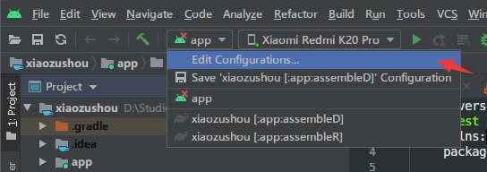
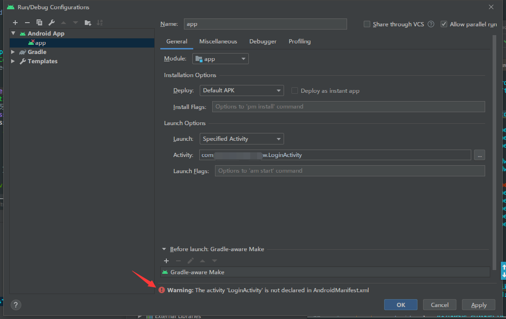
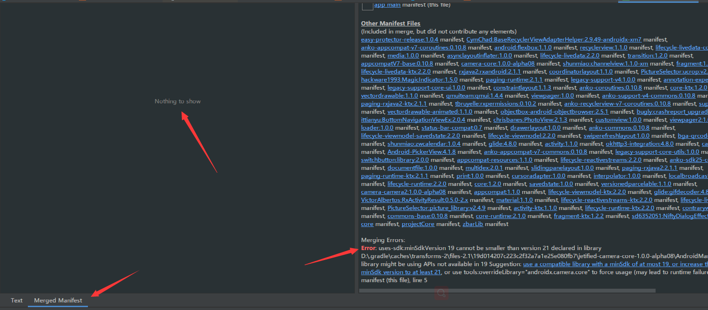

目录
大家在用Android Studio的时候可能都遇到过一种情况,点击运行app,as提示”Default Activity not found”,出现这种情况的原因是多种多样的,有时候能在as的报错中找到相关信息,有时候却找不到,让人很烦恼.一时找不到原因的情况下,可以按照下面的方法进行尝试.
解决尝试
有的时候clean项目重新build就能解决了,有时候却不能.
点击 File ->Invalidate Caches /Restart清除个人目录下的项目缓存,或则直接删除
C:\Users\userName\.AndroidStudio4.0\system的文件夹,注意config文件夹不要删除,否则as的一些个性化设置就丢失了.尝试命令行构建,在项目的根目录下打开命令行执行
gradle :app:assembleD -i -s看能否构建成功,或者从构建的输出中能不能找到错误的相关信息.如果是使用的默认的gradle wrapper 的话,命令中的gradle要改成gradlew:.\gradlew.bat :app:assembleD -i -s.直接指定要启动的activity:

在弹出的Configurations对话框的Launch中选择Specified Activity,在Activity中选择要启动的Activity:

图中选择了以后,提示该activity不在清单中,但是检查清单,这个activity当然是声明了的.这时候很可能的情况就是清单合并失败了.检查清单合并,打开app module的清单文件,点击清单窗口左下↙的Merged Manifest:

可以看到,左边并没有显示合并后的清单,右边也显示了合并出错的原因,只要解决相应的问题,左边就会显示合并后的清单文件,也就能正常启动build进行安装了.
关于本文
本文作者 longforus，采用 CC BY-NC 4.0 许可协议。转载请注明出处。